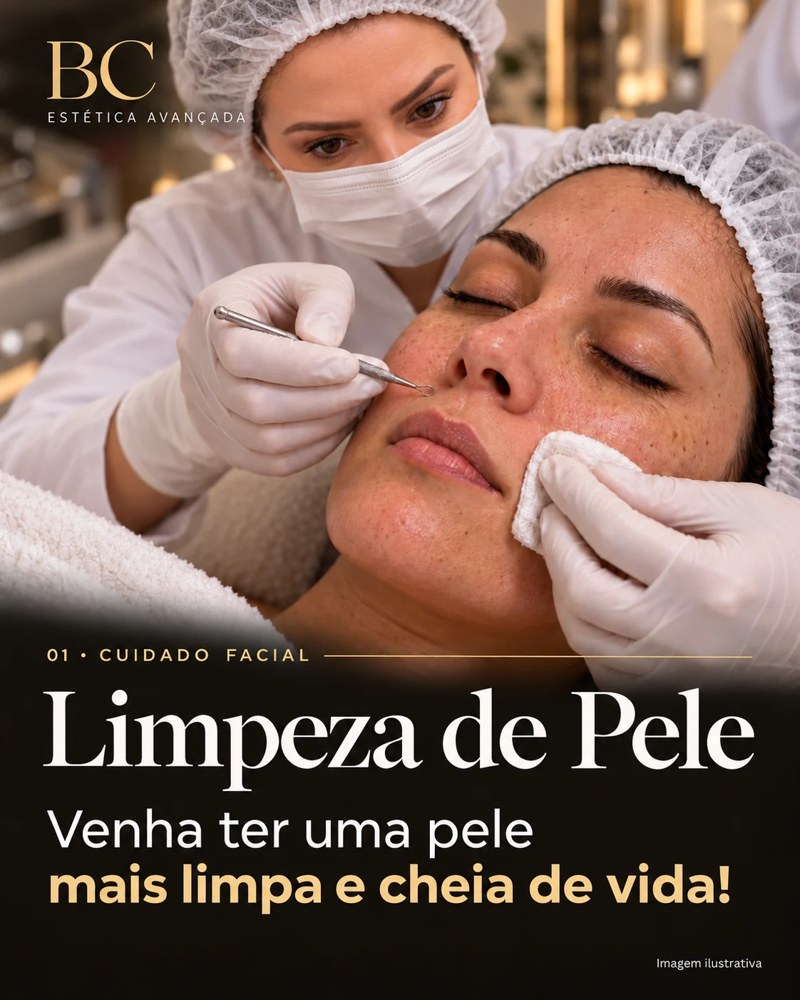

01 · Cuidado facial
Limpeza de Pele
Higienização profunda que ajuda a remover impurezas, oleosidade e cravos, conforme as necessidades de cada tipo de pele.
Pode favorecer uma pele mais limpa, macia e com textura mais uniforme.